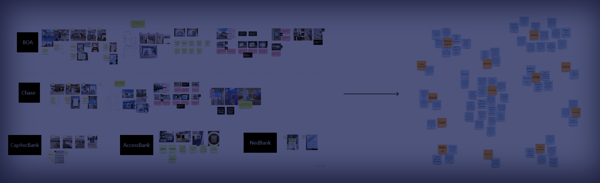
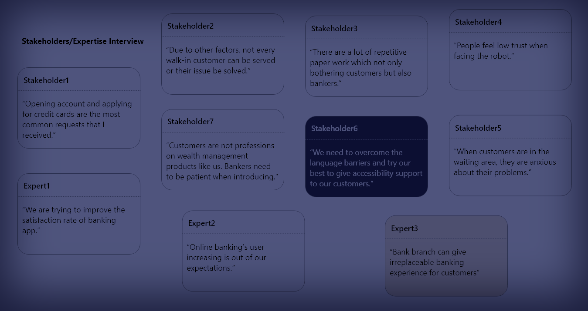
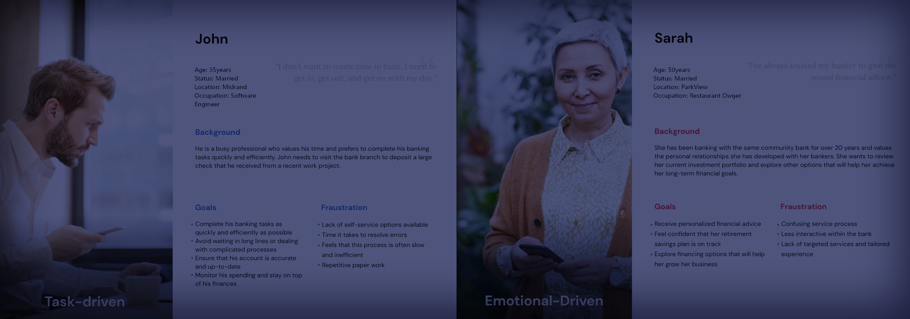
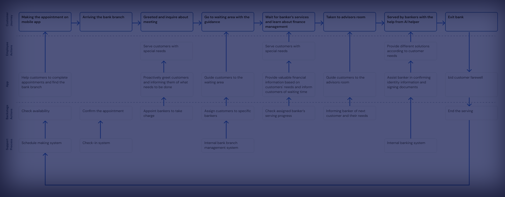
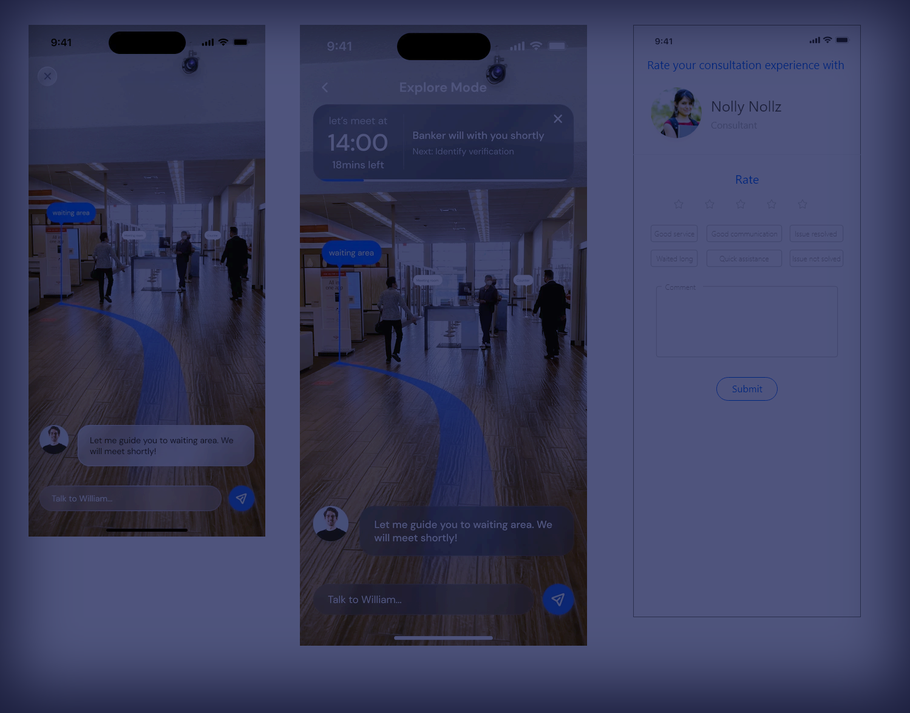
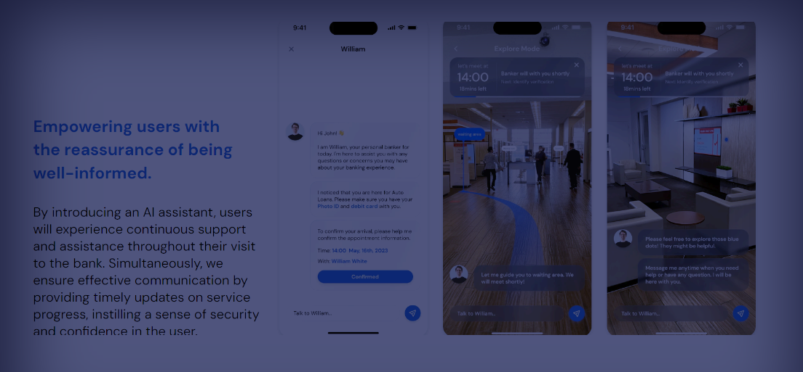
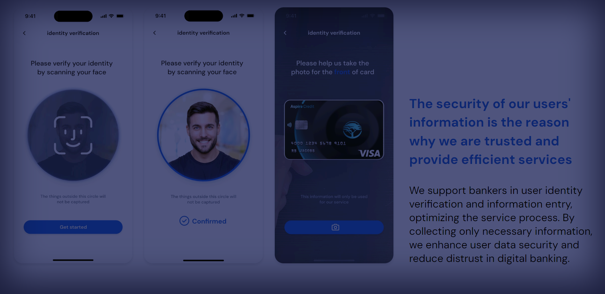
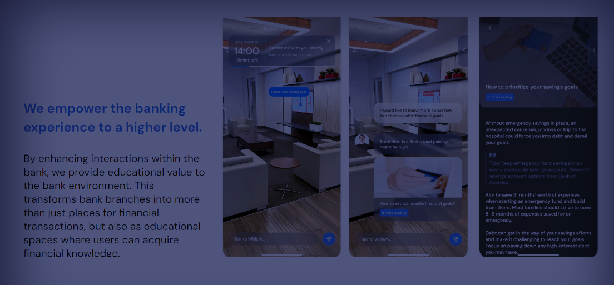
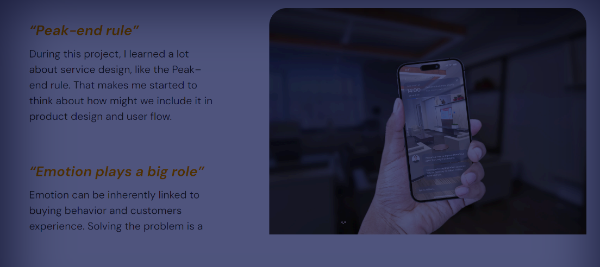

In Person Service Experience In Banks
 Figma
Figma
BRIEF
This project seeks to enhance the customer experience in bank branches by developing a
mobile app that improves service efficiency, connects customers with bank tellers, and
enhances the educational value of branches. The app streamlines processes, provides
personalized assistance, and transforms branches into dynamic spaces for a seamless and
enriched experience.

PROBLEM STATEMENT
How might we enhance the customer experience in bank branches to adapt to the diversions brought by online banking and the reduced efficiency
PROCESS
- 1. Opportunity validation
- 2. Design
- 3. Development
- 4. Launch and Iteration
OBSERVATION
By conducting observations in bank branches, we seek to gain insights into the current pain points and identify opportunities to adapt and improve the overall banking experience for customers

STAKEHOLDERS / EXPERTISE INTERVIEW
Through my research, I discovered that bank branches not only fulfill requirements that cannot be addressed by online banking but also endeavor to deliver a welcoming and cozy service akin to offline experiential stores.

CUSTOMER INTERVIEW
I invite 18 people to have a online interview and 4 people to join our contextual inquiry to see what makes people still choosing bank branch and what problems they met.

CUSTOMER SEGMENTATION
Based on my contextual inquiry and online interview, I classify users in to three types depending on their frequency of visiting branch, frequency of online banking, and needs on banking.

PERSONA
Based on my contextual inquiry and online interview, I classify users in to three types depending on their frequency of visiting branch, frequency of online banking, and needs on banking.

CUSTOMER JOURNEY MAP

SOLUTION
An app that helps improve the efficiency of bank branch services, connects bank teller services, and enhances the educational significance of bank branches
SERVICE BLUEPRINT

LOW-FI WIREFRAME

USER TESTING & ITERATION
After I finished the first version of the high-fidelity prototype, I did a user test in which I got a lot of feedbacks and made changes based on that.

Problem
Bright color mode is less readable in AR. Users not only want to know what they need to do now, they also want to be informed of the next steps
Solution
Change the color palete to dark background with white text for AR scenarios. Adjust the theme color to make sure the contrast as well. Add a progress notification window to inform users about their task progress
USER INTERFACE



TAKEAWAY
